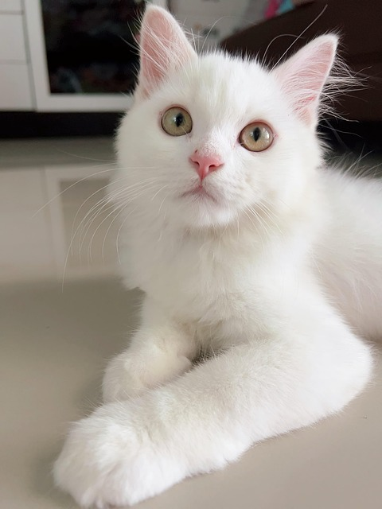

ข้อมูลเกี่ยวกับเรา
มหาวิทยาลัยศรีปทุม วิทยาเขตชลบุรี
แมว

สปีชีส์สัตว์เลี้ยงลูกด้วยนมกินเนื้อขนาดเล็ก ซึ่งจัดอยู่ในวงศ์เสือและแมว (Felidae) และเป็นเพียงสปีชีส์เดียวในวงศ์นี้ที่มนุษย์ปรับให้กลายเป็นสัตว์เลี้ยง